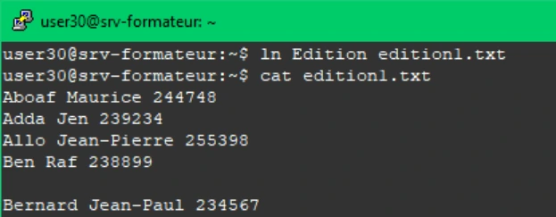
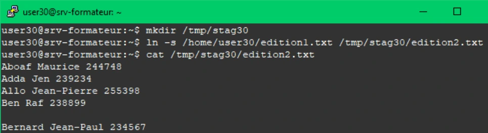
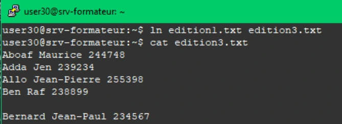
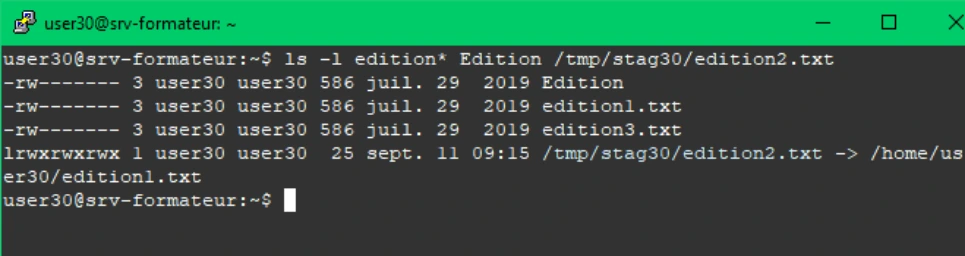
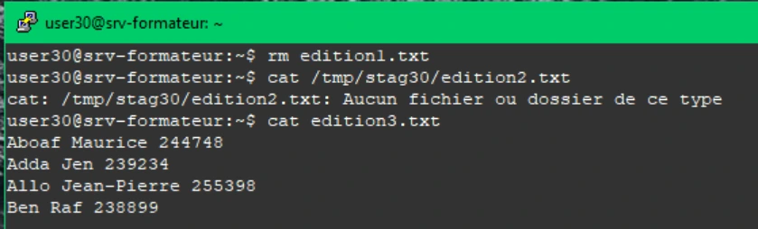

Transcription du document de formation ; texte et captures isolées sont distincts de l’aide pédagogique.
TP du Module 05 – Utiliser des fichiers sous Linux
Avant de démarrer ce TP, il convient d’avoir suivi les vidéos du module 5 et d’avoir effectué le TP précédent.
Durée estimée
45 à 60 minutes
Dans le module que vous venez de parcourir, vous trouverez les commandes nécessaires pour répondre aux questions.
ln Edition edition1.txtcat edition1.txtmkdir /tmp/stag30ln -s /home/user30/edition1.txt /tmp/stag30/edition2.txtcat /tmp/stag30/edition2.txt
ln edition1.txt edition3.txtls -l edition* Edition /tmp/stag30/edition2.txtrm edition1.txtcat /tmp/stag30/edition2.txtcat: /tmp/stag30/edition2.txt: Aucun fichier ou dossier de ce typecat edition3.txt


